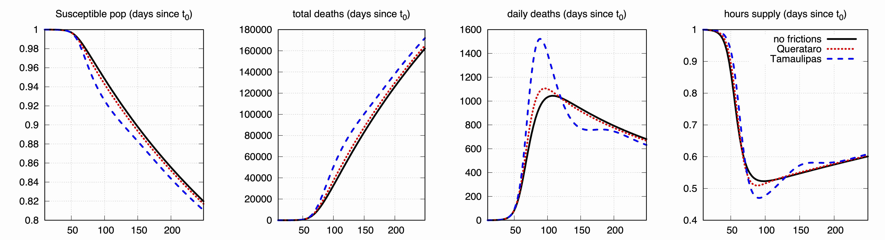
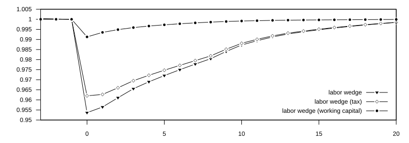

Abstract:
A salient feature of emerging economies is that fiscal policy is conducted against the traditional stabilization recipe. Government spending is procyclical (falls in recessions) while tax rates, in particular labor taxes, move countercyclically (increase in recessions). We account for
this result as the outcome of a model where the government conducts fiscal policy optimally and
is able to commit to future policies. The setup is a small open economy with incomplete markets
and a rich labor market structure including an informal sector. Our quantitative results are: (i)
the cyclical properties of labor taxes differ according to the nature of the shocks (productivity or
foreign interest rates) affecting the economy; and (ii) the presence of an informal sector widens
the set of parameters under which distorting labor taxes are negatively correlated with output.
The second result is implied by the role of informality in amplifying the fluctuations of the tax
base over the business cycle.
Research
Publications
"Informality, Tax Distortions, and the Cyclicality of Fiscal Policy", 12 May 2026, IMF Economic Review, Tiago Tavares joint with Carlos UrrutiaWorking paper [Link]; Abstract []
"The Role of International Reserves in Sovereign Debt Restructuring under Fiscal Adjustment", May 2025, Journal of Economic Dynamics and Control, vol. 174, Tiago Tavares
Working paper [Link]; Media coverage [Link 1]; Abstract []
Abstract:
Highly indebted developing economies commonly also hold large external reserves. This behavior seems puzzling given that governments in these countries borrow with an interest rate penalty to compensate lenders for default risk. Reducing debt to the same extent as reserves would maintain net liabilities constant while decreasing interest payments. However, holding reserves can have insurance benefits in a financial crisis. To rationalize the levels of international reserves and external debt observed in the data, a standard dynamic model of equilibrium default is extended to include distortionary taxation and debt restructuring. This paper shows that fiscal adjustments induced by sovereign default can generate large demand for reserves if taxation is distortionary. At the same time, a non-negligible position in reserves modifies the debt restructuring negotiations upon default. A calibrated version of the model produces recovery rate schedules that are increasing with reserves, as seen in the data, being also able to replicate large positions of reserves and debt to GDP. Finally, I study how both mechanisms play a key quantitative role to generate such result, in fact, not including them, produces a counterfactual demand for reserves that is close to zero.
"Investment slumps during financial crises: The real effects of credit supply", July 2022, Journal of Financial Economics, vol 145(1); Tiago Tavares joint with Alexandros Fakos and Plutarchos Sakellaris
Working paper [Link]; Abstract []
Abstract:
How much do credit constraints contribute to investment slumps during financial crises? For the Greek crisis that erupted in 2010, we find that tightened credit constraints contributed to about half of the observed collapse in investment rates. The remainder is explained by diminished demand and productivity facing the firms. We use a novel census-type dataset of manufacturing firms and show that standard dynamic investment models abstracting from credit constraints cannot reproduce the observed investment dynamics. Enhanced with borrowing constraints subject to an aggregate shock to eligible collateral, such models can account for the observed collapse in investment rates.

"Information and behavioral responses during a pandemic: Evidence from delays in Covid-19 death reports", January 2022, Journal of Development Economics, vol 154; Tiago Tavares joint with Emilio Gutierrez and Adrian Rubli
Working paper [Link 1, Link 2]; Media coverage [Link 1]; Abstract []
Abstract:
Information is an important policy tool for managing epidemics, but issues with data col- lection may hinder its effectiveness. Focusing on Covid-19 in Mexico, we ask whether delays in reporting deaths affect individuals’ beliefs and behavior. Leveraging an online survey, we randomly provide information to respondents either accounting or not for delays in death re- ports. We find that not accounting for delays leads to a lower perceived risk of contagion and intention to comply with social distancing. An equilibrium model incorporating the endogenous behavioral response documented by our intervention illustrates the effect of reporting delays on the evolution of the epidemic.

"Labor market distortions under sovereign debt default crises", November 2019, Journal of Economic Dynamics and Control, vol 108; Tiago Tavares
Working Paper [Link]; Abstract []
Abstract:
Risk of sovereign debt default has frequently affected both emerging market and developed economies. Such financial crises are often followed by severe declines of employment that are hard to justify using standard economic models. This paper documents that labor market distortions deteriorate substantially around debt default episodes. Two different explanations for such dynamics are evaluated by linking these distortions to changes in labor taxes and costs of financing working capital. When added into a dynamic model of equilibrium default, these features are able to replicate the behavior of the observed labor distortion around a period of financial crisis and can also account for substantial declines of employment. In the model, higher interest rates are propagated into larger costs of hiring labor through the presence of working capital. Then, as an economy is hit with a stream of bad productivity shocks, the incentives to default become stronger, thus increasing the cost of debt. This reduces firm demand for labor and generates a labor wedge. A similar effect is obtained with an endogenously generated counter-cyclical income tax rate policy that also rationalizes why austerity is applied during deep recessions. The model is used to shed light on the recent events of the Euro Area debt crisis, in particular, the Greek sovereign debt default.

Working Papers
"Financing Transformative Search: Runway, Control, and Frontier Innovation", 2026, Tiago TavaresCurrent Version [Link]; Abstract []
Abstract:
This paper develops a theory of financing and governing transformative search: costly search for a transformative opportunity whose timing, payoff, and implementation are uncertain.
The central object is the runway-attainability wedge, the gap between desired runway and the runway that can be financed while preserving authority over search.
The decomposition separates this wedge into financing-frontier and governance shortfalls.
Liquidity is valuable because it buys discovery time and, after discovery, implementation capacity.
Search raises pledgeable upside by increasing opportunity arrival, but it also burns cash, so fixed claims are compatible with positive runway only over an intermediate range.
Debt therefore has no one-sided implication for search: it can create overhang and implementation frictions, but it can also intensify search when higher burn makes delay more costly.
When outside ownership is capped, financing changes real policy: controllers may use more debt, underfund runway, or use back-loaded non-voting claims that avoid coupon burn and voting dilution but reduce residual implementation payoff.
The decision criterion is whether a financing architecture preserves attainable runway and search incentives, not how much capital it raises.
Frontier AI motivates the setting, but the framework applies to difficult-to-pledge transformative opportunities more broadly.
"Financially Constrained Households and Consumption Volatility in Open Economies", 2024, Tiago Tavares joint with Anurag Singh [R&R at the IMF Economic Review]
Current Version [Link]; Abstract []
Abstract:
Emerging market economies often exhibit aggregate consumption that is more volatile than aggregate income, contrary to predictions of standard macro models that are based on consumption smoothing through financial markets under transitory productivity shocks. This paper explores whether heterogeneity in access to financial services can explain this excess consumption volatility. To this end, we extend the standard SOE-RBC model by incorporating both hand-to-mouth and unconstrained households, alongside procyclical firm entry dynamics. Calibrated to capture emerging market features, the model successfully generates greater aggregate consumption volatility compared to aggregate income even when the only source of fluctuations is a transitory productivity shock. Using this framework, we conduct a Bayesian estimation on macroeconomic data for 12 advanced, 19 emerging, and 11 low-income economies. This comprehensive estimation delivers the macro-data consistent fraction of hand-to-mouth households in each country, which aligns closely with the micro-data. Moreover, the results underscore the significance of transitory TFP shocks, even when compared with permanent TFP shocks and interest rate fluctuations.
"Competition for Managers and the Rise in Skill Premium", 2024, Tiago Tavares joint with Kaniska Dam and Tridib Sharma [Submitted]
Current Version [Link]; Abstract []
Abstract:
Managerial occupations represent a significant and expanding segment of the US labor force. At the same time, good managerial practices enhance production efficiency. Competition among firms to hire managers’ services influences their remunerations depending on the technological contribution of a manager to efficiency and on the scarcity of these services in the market. Moreover, since the improvement in the efficiency of production also changes firms’ demand for other factors of production, the general compensation of other types of labor, particularly high-skill workers, also change in a market economy. Given the extensive and expanding body of research on the rise of wage inequality in the US economy1, this paper adds to the literature by analyzing how the increase in managerial compensation can be accommodated with an expansion of their services and how these contribute to the increase in the skill-premium.
"Delays in Death Reports and their Implications for Tracking the Evolution of COVID-19", 2020, Tiago Tavares joint with Emilio Gutierrez and Adrian Rubli, in Covid Economics 1(34): 116-144
Current Version [Link 1, Link 2]; Abstract []
Abstract:
Understanding the determinants and implications of delays in reporting COVID-19 deaths is important for managing the epidemic. Contrasting England and Mexico, we document that reporting delays in Mexico are larger on average, exhibit higher geographic heterogeneity, and are more responsive to the total number of occurred deaths in a given location-date. We then estimate simple SIR models for each country to illustrate the implications of not accounting for reporting delays. Our results highlight the fact that low and middle-income countries are likely to face additional challenges during the pandemic due to lower quality of real-time information.
"Heterogeneous Investment Dynamics of Greek Manufacturing Firms", 2017, Tiago Tavares joint with Alexandros Fakos [under revision]
Current Version [Link]; Abstract []
Abstract:
In this paper we study firm-level investment dynamics by incorporating an idiosyncratic investment cost shock in a dynamic investment model of heterogeneous firms with adjustment costs. We interpret this idiosyncratic shock as an investment wedge summarizing firm deviations from model implied efficient behavior. We estimate our dynamic model using data micro-level data of Greek manufacturing firms, allowing for firms to be heterogenous in both profitability and investment cost. Our estimation results show that the level of dispersion of the idiosyncratic investment shock is of the same order of magnitude as the profitability shock which tends to be substantial in most micro-studies. We also find evidence that the investment wedge is correlated with variables not explicitly taken into account by our model such as measures of firm-level leverage and export intensity. This suggests that a financial channel in models of capital accumulation may be crucial in explaining data patterns.
"Noisy information About the Trend and Sovereign Default Risk", 2015, Tiago Tavares [under revision]
Current Version [Link - soon]; Abstract []
Abstract:
Emerging markets economies are subject to substantial volatility in trend growth motivated by frequent policy reversals. Also, agents in emerging markets face higher uncertainty due to weak institutions and political instability. Motivated by these observations, we build a dynamic stochastic model in which agents cannot perfectly distinguish between the trend and transient component of observed endowments, but can only learn about them by solving a signal-extraction problem. We extend this model to include endogenous default risk and conclude that, for similar endowment and debt levels, higher uncertainty about the trend implies larger default risk. This result is consistent with the documented empirical observation that interest rate spreads are, on average, larger in periods that surround election periods, associated with higher uncertainty, as well with other empirical regularities regarding emerging markets. Furthermore, we use the model to shed light on the recent events that characterized the greek sovereign debt crisis.
Paper Discussions
"Mind the gaps: Gender complementarities in migration and FDI "Federico Carril-Caccia, Ana Cuadros, and Jordi Paniagua
1st Notre Dame-ITAM PODER Mini-Conference (2023)
"Heterogeneous Beliefs and Business Cycles "
Saki Bigio, Dejanir Silva, and Eduardo Zilberman
10o Encontro Luso-Brasileiro de Macroeconomia (2022)
"Trade Collapses and Sovereign Debt Restructurings: Does a Market-Friendly Approach Improve the Outcome?"
Tamon Asonuma, Marcos Chamon, and Akira Sasahara
2nd International Macro/Finance and Sovereign Debt Workshop in East Asia (2021)
"Official Sector Lending Strategies During the Euro Area Crisis"
Giancarlos Corsetti, Aitor Erce, and Timothy Uy
GIC/LeBow College - Sovereign Debt Restructuring Conference (2019)